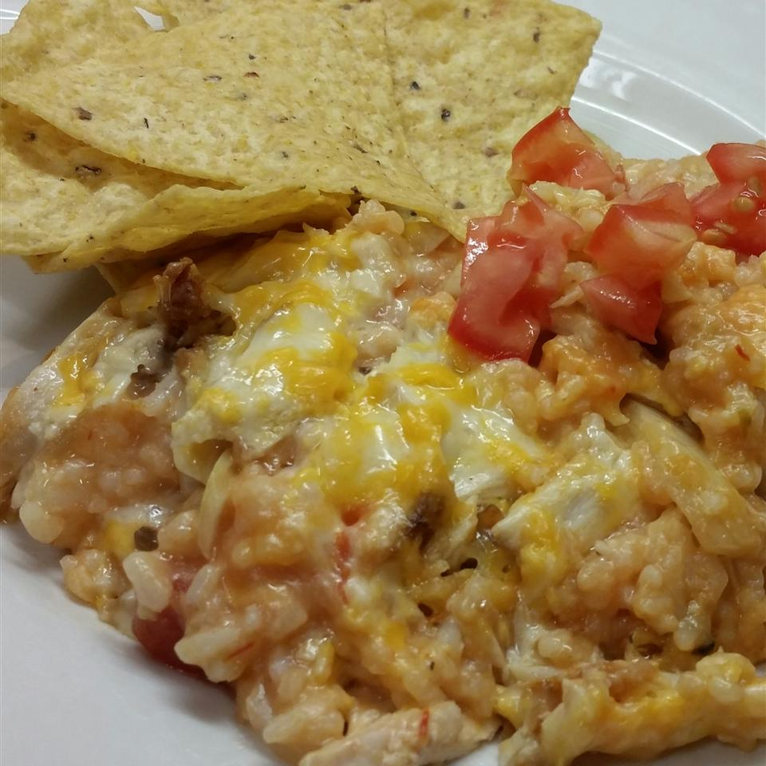

Salsa Chicken Rice Casserole

Description
Layers of rice, chicken breast, a creamy soup and salsa mixture and two kinds of cheese add up to a simply yummy salsa casserole! This recipe is a family favorite because it's delicious and easily made with ingredients found in the pantry.
Ingredients
- 1 ⅓ cups uncooked white rice
- 2 ⅔ cups water
- 4 skinless, boneless chicken breast halves
- 2 cups shredded Monterey Jack cheese
- 2 cups shredded Cheddar cheese
- 1 (10.75 ounce) can condensed cream of chicken soup
- 1 (10.75 ounce) can condensed cream of mushroom soup
- 1 onion, chopped
- 1 ½ cups mild salsa
Steps
- Place rice and water in a saucepan, and bring to a boil. Reduce heat to low, cover, and simmer for 20 minutes.
- Meanwhile, place chicken breast halves into a large saucepan, and fill the pan with water. Bring to a boil, and cook for 20 minutes, or until done. Remove chicken from water. When cool enough to handle, cut meat into bite-size pieces.
- Preheat oven to 350 degrees F (175 degrees C). Lightly grease a 9x13 inch baking dish.
- In a medium bowl, combine Monterey Jack and Cheddar cheeses. In a separate bowl, mix together cream of chicken soup, cream of mushroom soup, onion, and salsa. Layer 1/2 of the rice, 1/2 of the chicken, 1/2 of the soup and salsa mixture, and 1/2 of the cheese mixture in prepared dish. Repeat layers, ending with cheese.
- Bake in preheated oven for about 40 minutes, or until bubbly.